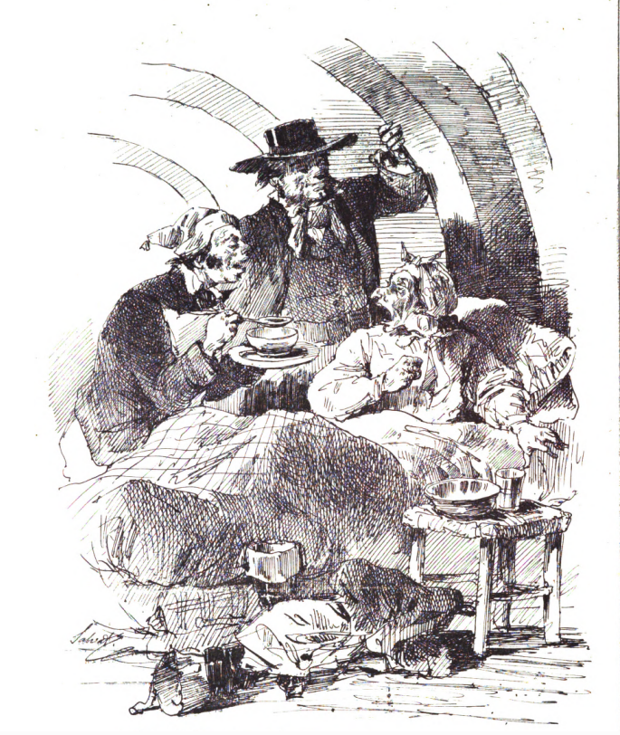

Il sito si articola in cinque sezioni principali, ciascuna delle quali ripartita in due o più sotto-sezioni.
La sezione HOME offre alcune informazioni preliminari su Il Barone di Nicastro Digitale, fra cui una breve introduzione al progetto, la presentazione del portale e una sezione riservata ai contatti per eventuali segnalazioni o comunicazioni.
La sezione NOTA INTRODUTTIVA prevede, nell’ordine, la ricostruzione della storia redazionale-editoriale del testo; l’illustrazione dei criteri di trascrizione adottati per l’edizione dei manoscritti e dei testi a stampa; i criteri di codifica dei testi.
La sezione TESTO presenta tre modalità di consultazione delle redazioni a oggi note del Barone di Nicastro. In previsione dell’edizione critica programmata da Pier Vincenzo Mengaldo per l’Edizione Nazionale si è scelto infatti di rinunciare a un’edizione critica digitale, proponendo un triplo standard di visualizzazione. Nella modalità «Facsimile», attraverso la scelta del testimone si accede a una visualizzazione vis-à-vis facsimilare e alla sua trascrizione semi-diplomatica, consultabile singolarmente (una per ogni redazione ricostruita); la modalità «Testo semplice» presenta il singolo testo selezionato; la modalità «Visualizzazione Sinottica» consente di scegliere le redazioni da visualizzare in parallelo. Per il Testo semplice e per la «Visualizzazione Sinottica» si segue la divisione per capitoli, secondo la scansione proposta dall'edizione più affidabile del Barone di Nicastro (Ricciardi, 2015).
La sezione MATERIALI presenta tre sotto-sezioni: «Archivio facsimilare», «Indice dei nomi», «Bibliografia». La prima sotto-sezione si propone come un piccolo archivio digitale, realizzato con l’obiettivo di mettere il testo di Nievo in relazione sia con gli apparati iconografici che lo circondano (come le illustrazioni dei giornali o le immagini di copertina), sia con i testi che lo hanno accompagnato all’interno delle riviste o dei volumi miscellanei Sanvito. Sono dunque forniti in riproduzione facsimilare i fascicoli del «Pungolo» e del «Fuggilozio» dove furono pubblicate le redazioni del 1857 e del 1859, insieme all’edizione Sanvito 1860 maggiormente citata all’interno dei cataloghi bibliotecari informatizzati. La seconda sotto-sezione accoglie tutti i nomi dei personaggi storici presenti nei testi, corredati dei link alle eventuali pagine Treccani, VIAF e Wikidata, nonché una tabella con le occorrenze e le relazioni all'interno dei testimoni. L'ultima sotto-sezione presenta una bibliografia critica dedicata al contesto, alla composizione e all'interpretazione del Barone di Nicastro.
La sezione MAPPA si articola in una mappa digitale, realizzata tramite Storymap, dedicata all’erratico viaggio del barone Camillo di Nicastro alla ricerca della virtù, sulla base di una geografia politicamente allusiva messa in rilievo a partire dai contributi indicati nell’apposita bibliografia.
Bianca Del Buono
Federico Siragusa